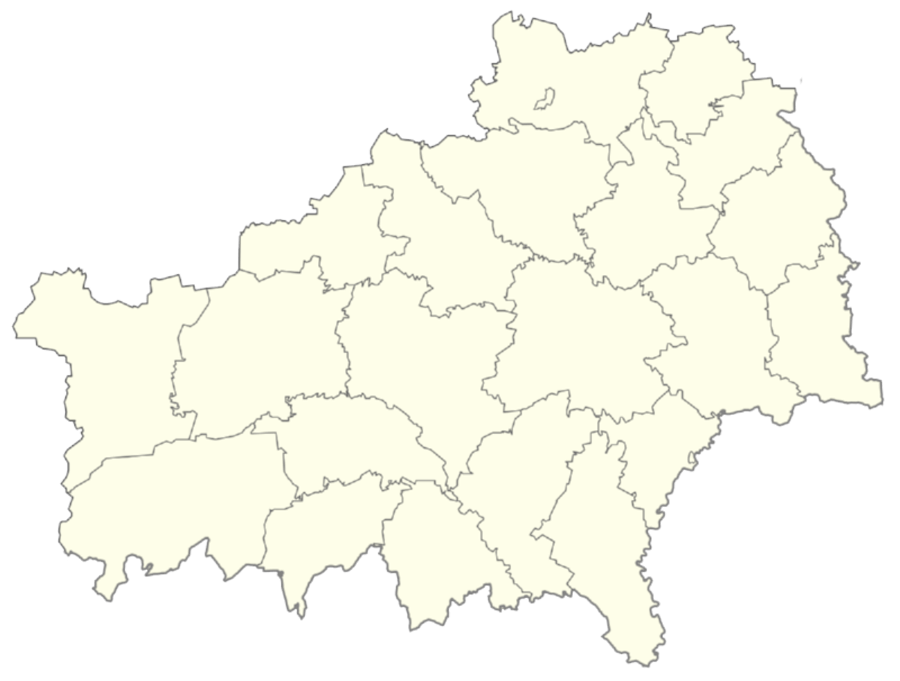

Гомельская область

Гомельская область – крупнейшая по территории область Беларуси (40,4 тыс. кв. км). На востоке область граничит с Россией,
на юге – с Украиной. Сельскохозяйственные угодья занимают около 30% территории региона.
Население Гомельской области - 1 млн 409,9 тыс. человек
- 88,22% населения составляют белорусы
- 7,71% – русские
- 2,15% – украинцы
Поселки и города Гомельской области
Гомель – областной административный центр. Территория области разделена на 21 район. В состав области входят 17 городов,
18 поселков городского типа и 2608 сельских населенных пунктов.
Транспортное сообщение Гомельской области
Гомельская область имеет развитую дорожную инфраструктуру. Через область проходят крупные международные автомагистрали,
соединяющие страны Европы с Россией и Украиной.
Гомельская область имеет обширную сеть железных дорог. 90% железнодорожных грузов страны и около половины пассажирских
поездов проходят через регион.
Главная река области – Днепр. Его протяженность – 420 км. Днепр пересекает территорию региона с севера на юг. Притоки
Днепра и реки Припяти имеют судоходное и сплавное значение, а также служат водоприемниками для мелиоративных каналов,
осушающих заболоченные земли.
На территории Гомельской области обширная сеть каналов. Кроме того, здесь много озер. Самое большое из них –
Червоное (площадь 43,6 кв. км).
В Гомеле и Мозыре расположены аэропорты.
Промышленность Гомельской области
Гомельская область является одним из высокоразвитых индустриальных регионов Беларуси. На его территории расположено
более 300 крупных и средних предприятий, доля которых в объеме промышленного производства республики составляет 22%.
Около 70% производимой продукции идет на экспорт. Внешнеторговые операции осуществляются более чем со 100 странами.
Объем выпускаемой продукции Гомельской области в расчете на 1 жителя больше, чем в Минске.
Ведущими отраслями промышленности являются:
- топливная
- химическая
- лесная
- легкая
- пищевая
- производство стали и металлопроката
- машиностроение (особенно развито сельскохозяйственное машиностроение)
Основной промышленный потенциал сосредоточен в городах Гомель, Мозырь, Жлобин, Светлогорск, Речица, Добруш.
Природные ресурсы Гомельской области
Среди полезных ископаемых, которые представляют особую значимость для народного хозяйства области, – топливно-энергетическое сырье.
Разведано около 1500 месторождений торфа.
В 1964 году вблизи г. Речица была добыта первая промышленная нефть. Сегодня ее получено более 100 млн. тонн.
Ежегодно добывается 1,8 млн. тонн.
Треть территории области покрыта лесами. По запасам леса Гомельская область занимает первое место в Беларуси.
В юго-восточной части Припятской впадины разведаны залежи каменного угля.
В Ельском районе обнаружено месторождение горючих сланцев.
В 100 млн. тонн оцениваются запасы бурых углей, сосредоточенных в Житковичском и Бриневском месторождениях.
Разведанные запасы каменной соли превышают 22 млрд тонн. На базе Мозырского месторождения создано крупнейшее в республике
производство по выпуску соли (ОАО "Мозырьсоль").
В области имеются предпосылки для выявления и подготовки к промышленному освоению новых видов сырья – гипса,
базальтовых волокон, минеральных сорбентов, йодобромных рассолов.
На Гомельщине функционирует Полесский радиационно-экологический заповедник – единственный такого типа в мире –
в котором изучаются и сохраняются в естественном состоянии территории, подвергшиеся радиоктивному воздействию после
аварии на Чернобыльской АЭС.
На территории Гомельской области расположен Национальный парк "Припятский", где практически в первозданном состоянии
сохранились уникальные ландшафты белорусского Полесья. Это единственное место на планете, где есть первобытные пойменные
дубравы.
Сельское хозяйство Гомельской области
Агропромышленный комплекс области способен удовлетворить потребности населения в основных продуктах питания и обеспечить
сырьем перерабатывающую отрасль. Основные сельскохозяйственные отрасли: мясо-молочное животноводство, овощеводство и
картофелеводство, а также льноводство (в восточной части области). Сельскохозяйственные угодья составляют более 1,2 млн га.
Около 50% произведенного в области продовольствия экспортируется в различные страны мира.
Культура и средства массовой информации Гомельской области
В Гомельской области находится множество памятников археологии, истории, культуры и архитектуры. В области 26 музеев,
4 театра и 2 художественные галереи.
Один из старейших и наиболее авторитетных музеев – Гомельский дворцово-парковый ансамбль, центром которого является дворец
Румянцевых и Паскевичей (памятник архитектуры конца XVIII – середины XIX вв).
В регионе проходят различные фестивали искусств – регионального, республиканского и международного уровней. Присвоение
Гомелю статуса культурной столицы Беларуси и СНГ 2011 года является свидетельством высоких достижений Гомеля в сфере культуры.
В Гомельской области издается более 70 газет и журналов, работают региональные теле- и радиостанции.
Достопримечательности Гомельской области
В списке исторических, культурных и архитектурных памятников Брестчины более 2 тыс. объектов. Визитной карточкой области являются мемориал "Брестская крепость-герой" и национальный парк "Беловежская пуща".
Также среди наиболее исторически значимых:
- Дворец Пусловских (г.Коссово, Ивацевичский район)
- Усадьба Немцевичей (д.Скоки, Брестский район)
- Францисканский монастырь в Пинске
- Усадьба Пузынов (д.Гремяча, Каменецкий район)
- Дворцовый комплекс Сапегов (г.Ружаны, Пружанский район)
- Часовня в память битвы 1812 года (д.Городечно, Пружанский район)